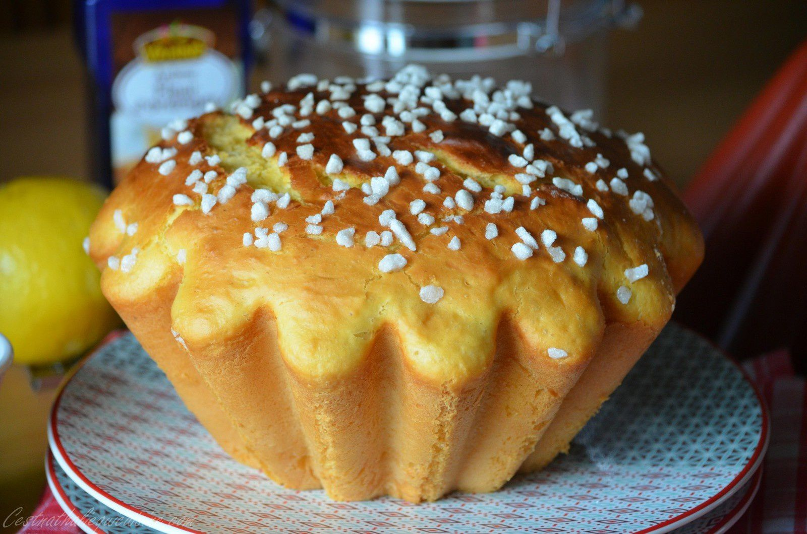
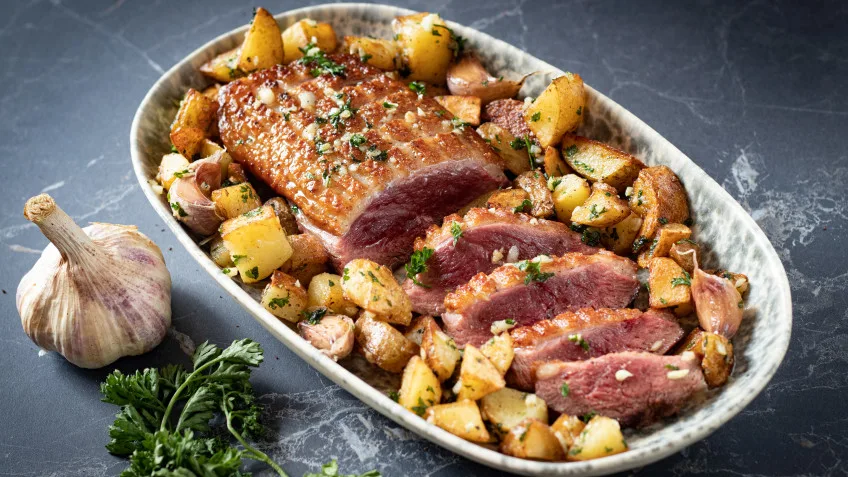
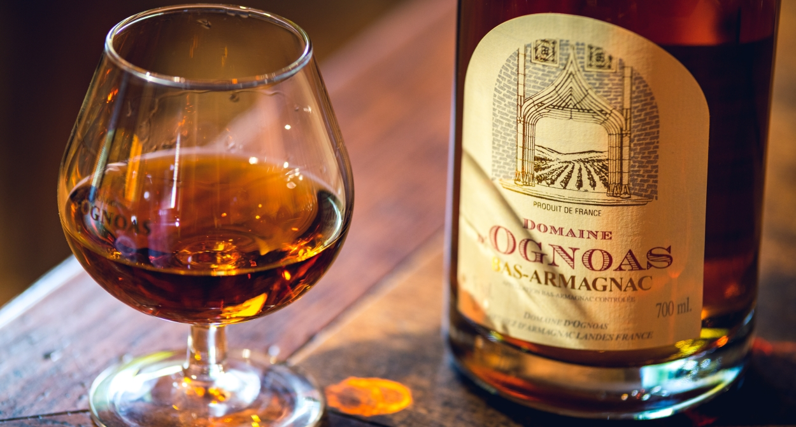
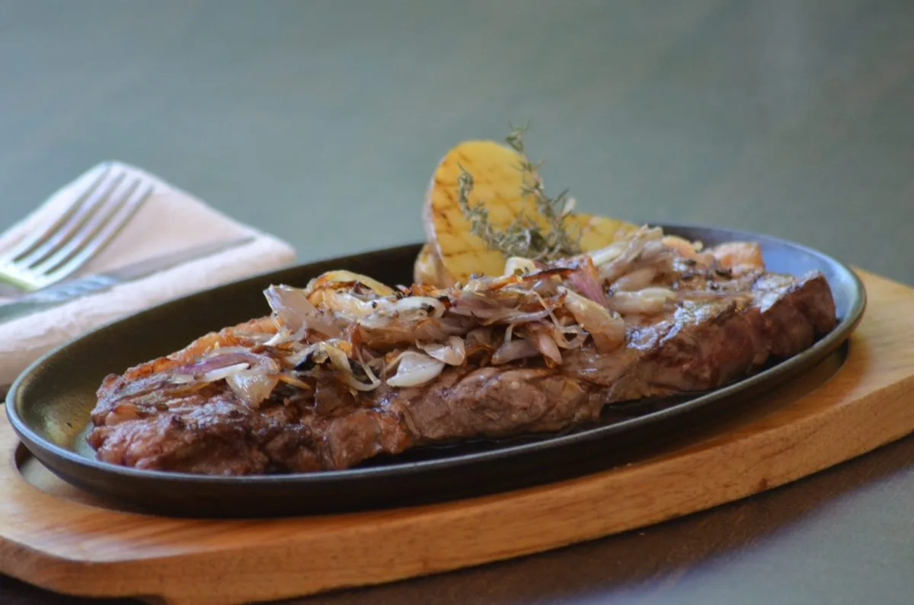
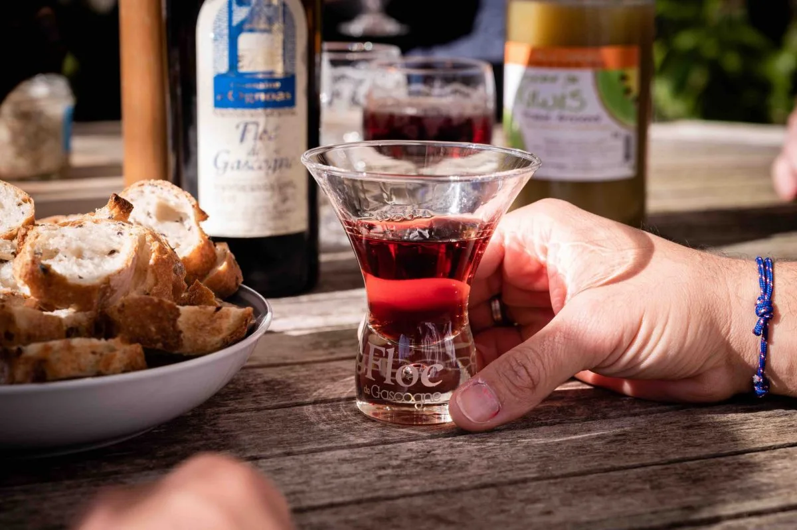
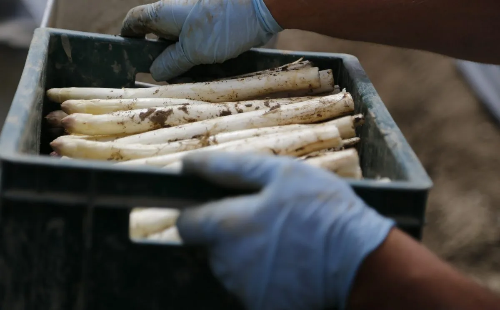
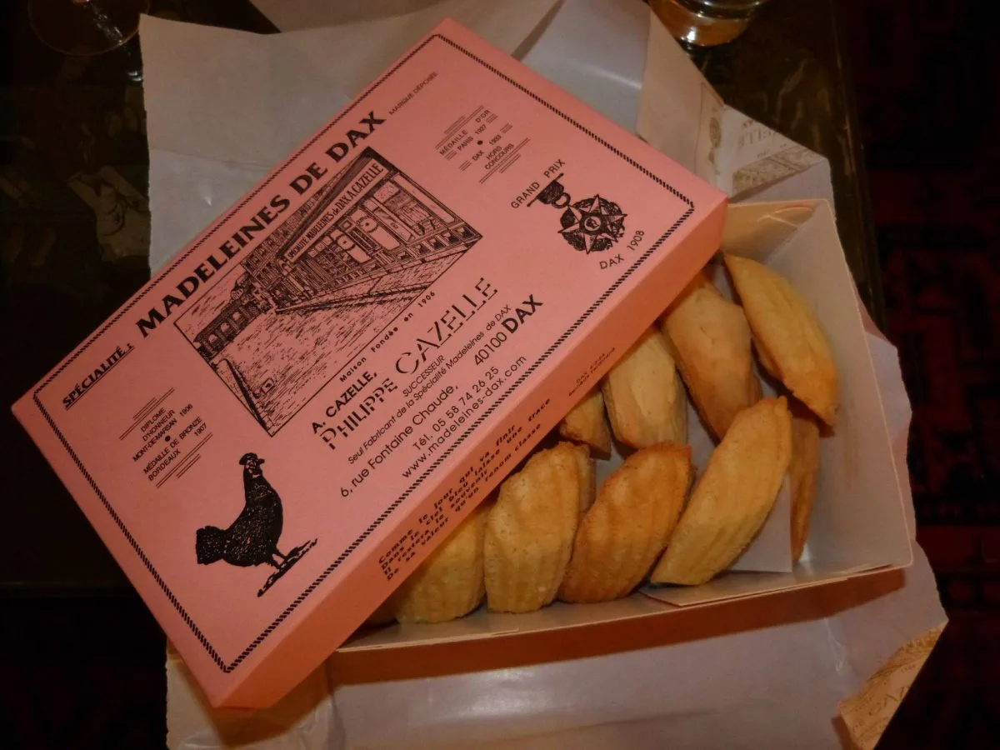

PASTIS LANDAIS
Brioche traditionnelle des Landes (le Pastís est un terme gascon et occitan signifiant « gâteau ») dans laquelle on trouve généralement de la vanille, du rhum, de la fleur d'oranger ou de l'anis et du sucre sur le dessus.
CANARD FERMIER DES LANDES
Foie gras mi-cuit, magret au barbecue, confit de canard et cheminée allumée. Le canard dans les Landes, un savoir-faire vieux de plusieurs siècles au sein de fermes familiales ou entreprises de renom.
ARMAGNAC
L'Armagnac est la plus ancienne eau-de-vie de France.
BOEUF DE CHALOSSE
Le bœuf de Chalosse est associé à un terroir et à la manière dont il est élevé. Il est élevé plus de 3 ans et jouit d'une nourriture entièrement naturelle. Cette viande est très qualitative et particulièrement exclusive.
FLOC DE GASCOGNE
Le Floc de Gascogne (également nommé « Lou Floc ») est un savant mélange (réalisé sur une même exploitation) d'un tiers d'Armagnac et deux tiers de jus de raisin frais. Il se décline en deux couleurs : le blanc et le rosé (habituellement appelé rouge).
ASPERGE DES SABLES DES LANDES
Dans les Landes, c'est la reine du printemps. L'aspigiculteur ne bénéficie que de 4 heures après la cueillette pour le conditionnement.
MADELEINES DE DAX
Une recette élaborée par Antonin Cazelle, dacquois, qui a découvert ce produit dans la Meuse. De retour à Dax, en 1906, il fonde sa boutique Les Madeleines de Dax. La recette est transmise de génération en génération et aujourd'hui la boutique est gérée par Philippe Cazelle, arrière-petit-fils d'Antonin Cazelle.
